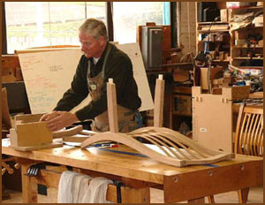
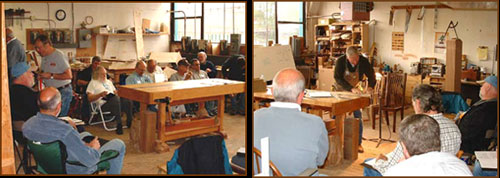
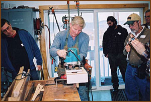
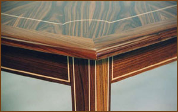
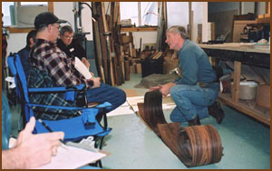
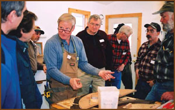

|
|
In my forty years of woodworking, the most rapid advances I made in the learning curve came from an apprenticeship with a guild master. Over the years I have refined many of the disciplines I learned there, as well as many of my own.

I primarily use power hand tools as well as stationary woodworking machines. Hand tools are rarely used in my shop, as they are so labor intensive. If you consider yourself to be an average woodworker with a small shop, or garage, and want to take your skill to the next level, I hope you will consider taking some of the classes I now offer. A day spent at my shop in Etna, CA (an hour south of Ashland, OR) could save you countless days of frustration, trying to master a new technique. The agonizing errors made by us all, learning a given technique, are what keeps most average woodworkers from advancing. If you are a beginning woodworker I would highly recommend the Siskiyou Woodcraft Guild's insight classes as a foundation, before taking any of the following classes.
Class Hours: 9am-5pm with an hour lunch break
Questions: e-mail Don@finecustomwoodfurniture.com
Please contact me for prices on apprenticeship pieces we construct in my shop on a one-on-one basis.
Accommodations available at:
The Etna Motel for less than $50.00 a night - 530-467-5338
Alder Brook Manor B & B - Three or more in "The Bunk House" for $25.00 a night/ per person - 530-467-3917

List of Classes
|
The Demi-Lune Table Class

This is a three week, one-on-one class, taught in my shop in Etna, CA, (an hour south of Ashland, OR), where we will build two tables simultaneously. This award winning table is for advanced woodworkers only. The demi-lune incorporates all the individual classes I now offer. Without the knowledge of bent laminations, vacuum bag veneering, dovetailing, mortise and floating tenon techniques, and master the curve, we would need far more time to build your table. Even with the above classes under your belt we will be covering many more advanced techniques, like inlaying curved string, using multiple veneer sandwiches to create string inlay, dovetailing a curved drawer front, using a leg box to create tapered hexagonal or octagonal legs, making seamless drawers with very tight margins in the apron, quality wood drawer slides, calculating curves from a three pint arc, and understanding how bearing off-sets can work to your advantage. Although you can bring your own wood, I can also supply it.
Lecture and demonstration on building your own demi-lune table is a two day class in my shop in Etna. $150 - (maximum ten students)
November 21st and 22nd, 2009
The one-on-one three week apprenticeship where we build your own demi-lune table is a three week class in my shop in Etna. $ varies based on complexity of the table -
Contact me for availability
Accommodations at the Etna Motel are less than $50.00 a night.
|
|
Dovetail Class

The dovetail joint class I teach is a technique I have developed after "chopping" many, many dovetails by hand the traditional way. It is a two day, hands on class, learning to master the hallmark of fine quality joinery, using the router freehand.
The first six hour day we will learn about selecting and preparing the wood for the Through Dovetail. Marking out the joint, building the appropriate jig for your router and learning a unique way of laying out the pin side of the joint without measuring are covered. I supply all materials.
You will be using your own tools (see list of required tools below). The jig, mentioned above is not a finger guided platform type that is available from many manufacturers, all of which use a standard dovetail bit, which turns out an obvious machine joint dovetail. This jig will allow you to use your router for almost all joinery techniques. You will wonder how you got along without it.
After the provided lunch we will begin using the jig and router to cut the more difficult pin side of the joint, starting and finishing with the half pin, which is one of the qualities of a fine dovetail joint. After several attempts you will be able to generate a flawless pin side for this joint. The tail side is scribed from the existing pin side for a perfect layout and match.
The tail side is sawn on my bandsaw, but a scroll saw works as well, and by the end of the day you will have mastered the Through Dovetail Joint.
The tools you will need for the first day:
A medium or large sized router with a 3/8 or 1/4 straight bit
A bevel gauge or saddle dovetail square
A good set of pin dividers
Chalk
A 6" or 8" C-clamp
A small sanding block with 220 paper attached
Safety glasses, noise protection & dust mask
A bright light on a floor stand or a bright headlamp
A paraffin block, set of sharp chisels & a small flat mill file
A large joiners clamp also known as a hand screw clamp (I have some)
A collet reducer 1/2" x 1/4"
An exacto knife
A small pocket square
A six inch scale with 32 nds.
An H-4 pencil
A tall stool
Your shop apron
The second day is a class on using these same techniques to cut the Half-Blind Dovetails for a drawer front or carcass work, again, starting and finishing with the half pin. This joint, the holy grail of the dovetail world, is decidedly more difficult than a through dovetail, as it can only be seen from one side.
After mastering the through dovetail joint on the first day, you feel the half blind is just too difficult, you can opt out for the second day of instruction with half the fee returned. (about an hour south of Ashland, OR)
Some additional tools needed for the Half Blind Dovetails are as follows:
- 1/8" router bit
- 1/4" and 1/8" sharp chisels
- An edge guide or fence for you router
- A cordless drill and 1/8" bit
- 3/4" flat white paper tape (not masking tape)
- Another H-4 pencil and a cabinet square
The dovetail class is a two day class in my shop in Etna - $150 (maximum of five students)
June 19th and 20th, 2010 Accommodations at the Etna Motel are less than $50.00 a night.
|
|
Mortise and Floating Tenon Joinery Techniques

The standard mortise and fixed tenon joint is the strongest of all the right angle edge joints, so strong in fact, that it is overkill for many applications with the use of modern adhesives. In second place is the mortise and floating tenon, which, in laboratory conditions, tested at 87% of the breaking strength of the gold standard, the mortise and fixed tenon.
This is a one day class in my shop in Etna, CA (about an hour south of Ashland, OR). It is not a hands-on class, but rather a demonstration and lecture on various techniques for cutting these types of joints. I will cover materials and selection of them, joint lay-out, angled joinery, off set joinery, curved joinery, setting up sister or mirror image jigs for multiple duplications, adhesive choices and clamping methods.
The Mortise and floating tenon class is $75 per day in my shop in Etna - (maximum of ten students)
June 27, 2010 9am-4pm, with an hour for lunch
|
|
Building Your Own Dining Room Table

Building your own fine dining room table is a project that many woodworkers would like to attempt. Whether you would like to use solid wood or veneers or make your table expandable with extra leaves, this may be a class for you. This class is for average woodworkers, well founded in basic woodworking techniques.
This class is designed for a woodworker with their own shop and the table would be built there. Depending on the design, several days of instruction as well as demonstrations, would be in my shop in Etna, CA (about an hour south of Ashland, OR). I would expect many phone calls while the project advances, for ongoing advice. A more complicated design would require more instruction on my part, so the fee would be more, as it will require more days in my shop.
Lecture and demonstration on building your own dining table in your shop. Two days - $150 (maximum ten students)
Call for scheduling.
Accommodations at the Etna Motel are less than $50.00 a night.
|
|
 Building Your Own Dining Room Chairs
Building Your Own Dining Room Chairs
The design and building of fine dining chairs is probably the most difficult of all the furniture disciplines. The necessity of good appearance, very strong joinery and comfort, all combine to make chairs a real challenge, even for the accomplished woodworker. Add to those difficulties the fact that a chair needs to be flared from top to bottom as well as front to back and you begin to see the difficulties. A further complication is that the seat needs to be slightly tilted towards the back. If that is not enough, ponder the right and left sides for all those angled mortise and tenon joints! This is the reason many accomplished woodworker web sites don't offer chairs to go along with their dining tables. They are that difficult.
The two classes I offer in my shop in Etna, CA are distinctly different, in that the first class is a two day seminar, where I build a chair from scratch. This class is open for average woodworkers and includes a written step by step book with many photos of various techniques. The second class is helping you build your own chair. It includes design, mock up, generation of the many jigs required to produce the rest of the chairs for your set. Obviously, this class would require several weeks in my shop, and once again I don't work weekends. This class is for advanced woodworkers only.
Lecture and demonstration on Building your own dining chair class is two days in my shop in Etna - $150 (maximum of ten students)
Call for scheduling.
Accommodations at the Etna Motel are less than $50.00 a night.
|
|
Vacuum Bag Veneering Class

Gluing down veneer in a near perfect vacuum can apply nearly sixteen hundred pounds of downforce per square foot! That's flat! Many clamping techniques are also possible using the vacuum bag, especially on curved forms. Buying and preparing raw veneer, trimming edges, taping strategies, inlay techniques, edge treatments and glues are a few of the hurdles to overcome in the learning curve of using veneers. Some of the finest pieces in the Smithsonian Museum are veneered pieces from the 1830's and are flawless only because they have been well cared for. Veneering with hide glues, which don't do well in extreme temperature swings, or moisture variables often failed to hold the veneer in place, thus giving veneer a bad reputation as cheap or inferior to solid woods. Modern adhesives, stable substrates and clamping techniques are far superior to the days of old.
If you're ready to broaden your furniture design palette this is the class for you. It will be a one day class at my shop in Etna, CA (about an hour south of Ashland, OR).
The Vacuum bag veneering class is $75 per day in my shop in Etna - (maximum of ten students)
June 26, 2010 9am
|
|
Mastering the Curve Class

The introduction of curved elements to your furniture can give it a refined look as well as helping a lot with proportions. Even a very slight curve on a linear element, often not even visible to the eye, can create a softness to an otherwise "boxy "piece.
This is a demonstration class on the generation of the curve and how to take it from a drawn curve to a pattern and then to a template, which is used to make the actual jig. This class will also cover radius and non-radius curves, and the techniques to fit a rim to a curved field or matching any convex or concave curve.
I will also show you my technique for flushing a fixed rim to a veneered top and the splining technique I use to fix the rim to the top, as well as across each miter. I will demonstrate the jig for letting your router make an ellipse of any proportions you like.
This class will be held in my shop in Etna, CA (an hour south of Ashland, OR). Six hours with a break for lunch.
The Mastering the curve class is $75 per day in my shop in Etna - (maximum of ten students)
June 12, 2010 9am
|
|
The Bent Lamination Class

The bent lamination, the strongest most accurate way to create curved elements in your furniture is accomplished by sequentially slicing a single board into thin strips, that will easily bend around a curved form, and then gluing them, in order, into a single curved element. This will allow you to use these graceful curves without the problem of "short or weak grain", that one encounters in a sawn curve from solid stock or the unpredictable amount of "spring-back" that is inherent in steam bending. This technique comes from the archery world that uses these laminations in their bows to handle the incredibly high stresses a modern bow must endure thousands of times.
This is a lecture on and demonstration of the design and generation of radius and non-radius curves, fairing a curve, generation of a template for cutting the curve and building the curved form for the bent lamination. Building a jig for re-sawing the tapered bent lamination on the band saw, understanding adhesives and clamping strategies are covered as well. You will also learn how to tune your bandsaw for re-sawing, and building a fence that will allow adjustment for blade "drift" that every saw has. I will discuss using the thickness planer for thin stock, and using types of bending plywood as well as using thick commercial veneers.
This is a one day class in my shop in Etna, CA, (an hour south of Ashland, OR).
The Bent Lamination class is $75 per day in my shop in Etna - (maximum of ten students)
June 13, 2010 9am
|
|
|
|

|
Precision Woodwork
Fine Custom Wood Furniture
Don DeDobbeleer
530-467-3922
Don@FineCustomWoodFurniture.com
|

|
|
Copyright © 2008-2015 Don DeDobbeleer. All rights reserved.
R & D Web Dynamic Website Creation
|
|